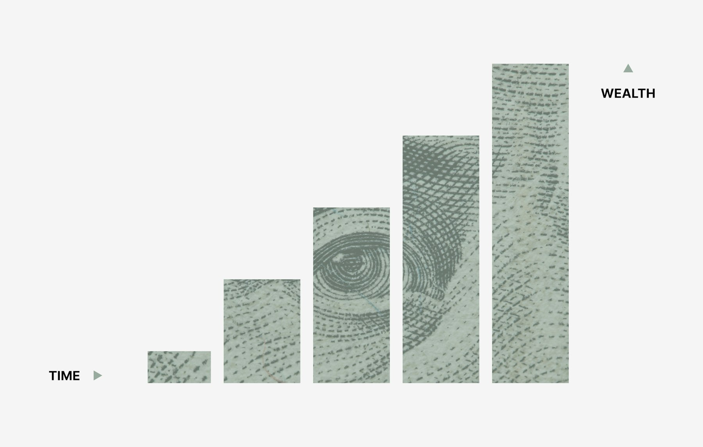

TL;DR
Start with Trello, Wave, and Canva—all free, quick to set up, and ideal for beginners. Don't waste money on advanced tools until you land your first client or sale. Upgrade only when you hit workflow pain, not before. Expect setup to take less than 3 hours total. Decision: Keep your stack simple to avoid costly mistakes.
Quick Verdict: Start Simple With Trello, Wave, and Canva
If you want to launch your first side hustle without wasting weeks on setup, start with Trello for task management, Wave for invoicing and basic accounting, and Canva for fast digital design. Trello is free, visual, and doesn’t force you into complexity. Wave handles invoicing and finance for zero cost. Canva gets you instant marketing assets even if you have zero design background.
Real numbers: A beginner with $0 in upfront budget can set up all three tools in a single evening. Trello and Wave rarely require upgrades for the first 3-6 months, and Canva’s free plan is enough unless you need custom brand assets. The key mistake is buying advanced software before you land your first paying client.
Most side hustles break down at the workflow level, not the idea or effort. Having a clear project dashboard, quick invoicing, and easy promo materials means you’ll actually ship your first paid project. If you're looking for more specialized reviews, check out decision guides for freelance tools or creative workflow platforms.
Who Each Essential Tool Is Actually For—and Who Should Wait
Project management isn’t a one-size-fits-all decision. Trello works best for freelancers, consultants, and product sellers who want a simple visual list. If you prefer structure and automation, Asana or Notion might be tempting, but Trello stays lightweight so you won’t spend hours configuring your first workflow.
Wave is a clear starter choice for individuals billing under $50,000/year who want zero-cost invoicing, automatic reminders, and straightforward tracking. If you expect international payment handling or detailed tax functionalities early, QuickBooks is more robust but clearly overkill until you’re earning consistently and need integrations.
Canva’s free plan serves new bloggers, course creators, and e-commerce beginners who need social media posts, lead magnets, or lightweight pitch decks. The tradeoff: If you know you’ll work with a design team or have brand guidelines, Adobe Creative Cloud might fit, but will cost $54.99/month and takes far more time to master.
Takeaway: If your goal is to land your first client or sale within 30 days, stick with tools that require zero setup learning curve. Only upgrade if you outgrow the basics. Example: A solo Etsy seller who switches from Canva to Photoshop too early usually burns hours on design perfection instead of testing what sells.
Where the Differences Start to Matter—Costs, Friction, and Scaling Pains

When you choose tools purely by popular reputation, hidden costs can compound. Subscriptions feel affordable at $10–$20/month—until you realize many platforms require upgrades for client onboarding, workflow automation, or basic integrations. Training time is another cost: Notion, for example, gives you infinite flexibility but can drain 10+ hours before you even launch your first gig.
Scenario: Many users start with Asana for $0 but quickly discover they need paid features to automate recurring tasks or set up client templates. The first month may feel smooth, but the real tradeoff appears at month two, when admin work doubles and invoicing still isn't integrated.
Compare this to Wave, which bundles invoicing, receipts, and basic reporting indefinitely for free—but won't let you reconcile multiple bank accounts until you scale sales volume.
In practice: The friction starts when your client list grows past a handful. Trello-using freelancers often reach a ceiling at about five simultaneous projects before card chaos hits.
Canva’s free plan gets you 80% of marketing assets, but team-based workflows or custom fonts quickly mean upsell—or awkward workarounds. The critical decision is knowing when basic tools will break down for your workflow and when to invest in upgrades.
That’s the moment to revisit deep-dive articles on scaling or detailed platform comparisons.
A Real Setup Scenario: Launching in 30 Days—Weekly Steps and Pitfalls
If you’re launching a freelance writing, social media, or product resale gig in 30 days, your workflow should focus on doing small essentials well—without getting lost in tool setup.
Step-by-step sequence: 1. Week 1: Create a Trello board with four columns—Ideas, To Do, In Progress, Done. Spend no more than 60 minutes setting up. Sign up for Wave and send yourself a $1 test invoice.
- Week 2: Use Canva to make your first promo image or business card. Test export and share it on a live platform. Set your first milestone—one client offer sent or product listing live by Day 14.
- Week 3: Have a weekly check-in every Sunday night. Archive finished Trello cards, log any expenses in Wave. Evaluate if any workflow step took more than 90 minutes; if so, look for automation or simplification.
- Week 4: Review your client response or sales numbers. If you hit your first client or sale, decide whether any friction would be solved by a paid plan. If not, note what worked and what was pure overhead.
Scenario: A beginner photographer using this setup landed their first $150 paid event by Day 24. The most common mistake is endlessly tweaking Trello or Canva instead of moving offers out the door. Each weekly step should have a clear deliverable—no progress means review your choices or simplify. For deeper tool-by-tool workflows, see specialized breakdowns for creative or service side hustles.
Mistakes and Overkill Choices—Where Beginners Go Wrong
The most common mistake? Beginners stacking too many tools before they even validate their first offer. It’s easy to believe every platform feature is essential, but unforeseen expenses add up quickly: Spending $200+ annually on project management or branded design before earning a cent is a painful lesson.
Example: A freelance copywriter who pays for Asana Premium and Adobe Creative Cloud in the first month—only to realize Wave’s free invoicing handles it all, and Canva’s free templates got faster client traction.
Another mistake is mismatched features: Not every side hustle needs deep automation or integrated team chat. If you’re working alone, Slack and Zapier integrations might just clutter your workflow and prompt notification fatigue, not efficiency.
Where this breaks down: If you’re juggling multiple clients and attempt to force a personal Trello board into a collaboration suite, you’ll meet friction fast. That triggers a costly scramble for upgrades or data migration.
Decisions get harder as you scale, but solo operators who keep their stack light grow faster in the first critical months. For deeper comparison, see guides on upgrading to automation tools or building your own stack without overkill.
Final Recommendation by User Type: Which Stack When—and When to Upgrade
If you’re a new freelancer, digital creator, or seller making less than $25,000 per year, start with Trello, Wave, and Canva at the free tier. Their combined setup time is under three hours, with zero required monthly spend. Only upgrade when a specific workflow block—such as client collaboration, time tracking, or advanced brand assets—starts costing you time or credibility with clients.
Best for solo beginners: Trello, Wave, Canva—all free, all easy to set up in a weekend. Upgrade when: You land two or more repeat clients monthly and find yourself manually duplicating workflows or wrangling clunky templates. Skip if: You believe more features means more results. Most early performance comes from clear offers and responsive communication, not from an overloaded tech stack.
Decision logic: The best fit for creative hustlers and solo consultants is to use free tools until their own sales or time pressure point toward a paid upgrade. Platform fatigue is real—those who delay adding more software spend less, pivot faster, and learn more from each mistake. Serious about scaling? Read into workflow automation comparisons or budget-friendly scaling approaches tailored to side hustles.
FAQ
What are the most affordable tools for beginners?
Trello, Wave, and Canva all offer robust free plans. You can launch your first side hustle with these platforms at zero upfront or monthly cost. Only consider paying once you need advanced branding, recurring automation, or multi-user functionality.
How much time do I need to set up these tools?
Most users can get basic Trello, Wave, and Canva accounts running in less than three hours total. Allocate about 60 minutes per tool for initial setup and first use. Avoid spending more than a day on setup—execution counts more than perfection.
When should I upgrade from free to paid plans?
Upgrade only when you hit a real ceiling. For example, if recurring invoices become a primary hassle, or you need to share branded templates with a team or client. There’s no one-size-fits-all trigger, but earning $1,000/month is a good milestone to reassess your tool stack.
Do I need different tools for EU or US taxes?
Wave is fully supported in the US and Canada for financial tracking and invoicing. For EU readers, consider alternatives like Zoho Invoice (also free) to ensure proper VAT handling and compliance with local tax laws.
This article is reviewed for real-world usefulness and updated as major tools or side hustle workflows change. If a tool’s free tier or features shift, recommendations will be revised for accuracy.
Next step
Use the article as a decision point, not just reading material. Your next system matters more than more browsing.
Search more articles
Find related tools, workflows, and guides.
Photo credits
- Photo 2: Andrew Neel via Unsplash
- Photo 3: Morgan Housel via Unsplash
- Photo 4: S O C I A L . C U T via Unsplash
- Photo 5: John Gibbons via Unsplash
- Photo 6: Annie Spratt via Unsplash